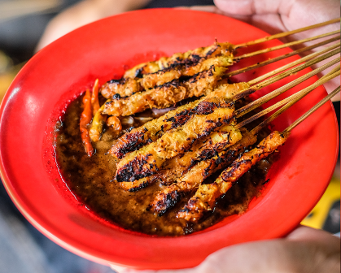
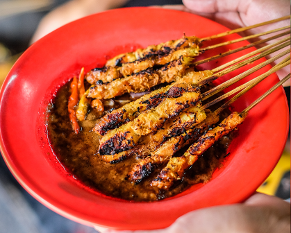

Local Foods of Surabaya

 

Rawon
Rawon is a rich and flavorful beef soup, famous for its deep black broth made from keluak nuts. This dish is a staple in Surabaya, with its savory and slightly tangy taste. It is usually served with rice, salted eggs, and sambal for an added kick of spice.
Rujak Cingur
Rujak Cingur is a traditional salad unique to Surabaya. It features a mix of fresh fruits, vegetables, and slices of boiled cow snout (cingur) drenched in a sweet and tangy peanut sauce with fermented shrimp paste. This dish perfectly balances sweet, sour, and savory flavors.
Sate Klopo
Sate Klopo is skewered grilled meat, but what sets it apart is the addition of grated coconut (klopo) on the skewers, which gives the meat a unique, slightly crunchy texture. This dish is loved by locals for its savory taste and is often paired with rice cakes or lontong.